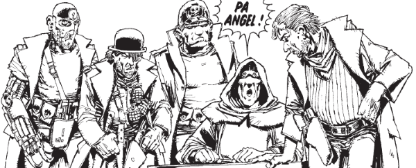

Used as something of a throwaway foil in The Judge Child quest, Dredd (once he catches up with them) makes short work of this evil, self-serving Cursed Earth family (made up of Pa, Junior, Link and Mean). But, the idea of the Angel Gang refused to die and was first expanded upon, with the addition of Fink Angel, before The Mean Machine was fully resurrected - going on to have many of his own antagonistic adventures in head-butting. The gang themselves are rarely seen together, although there's been an effort to rethink the legend in the modern (yet both historical and revisionist) Angelic.
Art by Mike McMahon
| Story Title | Parts | Pages | w indicates a wraparound coverCovers | Year(s) | Issues | Writer | Artist | Colourist | Letterer |
|---|---|---|---|---|---|---|---|---|---|
From Judge DreddThe Judge Child | 26 | 163 | 156: Brian Bolland 159: Ron Smith 160: Mike McMahon 161: Brian Bolland 163: Mike McMahon 164: Ron Smith 170: Mike McMahon 172: Brian Bolland 173: Brian Bolland9 | 1980 | 156-181 | Alan Grant John Wagnervarious | Brian Bolland: 1,7,17‑18 Ron Smith: 2‑4,9‑10,12‑14,19‑20,24‑26 Mike McMahon: 5‑6,8,11,15‑16,21‑23 various | <-- pp1-2e., [b&w] | Tom Frame |
From The Mean Machine...Goes to Town | 1 | 6 | 0 | 1981 | Reprints: X22JDA'82 | Alan Grant | Robin Smith | [b&w] | Steve Potter |
From The Mean MachineTravels With Muh Shrink | 7 | 36 | 730: Richard Dolan 734: Richard Dolan 2 | 1991 | Reprints: M3.76‑M3.77 M298 (supplement) 730-736 | John Wagner | Richard Dolan | <-- | Annie Parkhouse |
From Judge DreddFamily Feud | 1 | + 1 credit pages6 | 0 | 1995 | M3.01 | Chris Standley | Paul Johnson | P.B. Smith | Ellie de Ville |
From Judge Dredd Continued in M3.04Awakening of Angels | 1 | 6 | 0 | 1995 | 958 | John Wagner | Carlos Ezquerra | <-- | Tom Frame |
From Judge DreddStalking the Law | 1 | + 0.5 credit pages6 | 0 | 1995 | M3.04 | Robbie Morrison | Ashley Sanders | P.B. Smith | Ellie de Ville |
From Judge DreddThe Ballad of Devil Angel | 2 | 12 | 966: John Ridgway 1 | 1995 | 965-966 | Alan Grant | Simon Jacob | <-- | Tom Frame |
From Shimura Alternity.Angels of Death | 1 | 8 | 0 | 1996 | JDMS9 | Robbie Morrison | Lol | <-- | Gordon Robson |
Linked to: Fink Angel The Mean MachineBefore They Wuz Dead | 5 | 30 | 258: Mike McMahon 1 | 2007 | M258-M262 | Simon Spurrier | Steve Roberts | [b&w] | Ellie de Ville |
| >> Posters << | |||||||||
| A Family Portrait | 1 | 1 | 0 | 1981 | 196 | n/a | Mike McMahon (P) Dave Gibbons (I) various | [sepia tone] | n/a |
From Great Moments in Thrill‑Power Prog 160.Judge Dredd: Enter the Angel Gang | 1 | 2 | 0 | 2007 | p2008 | n/a | Clint Langley | <-- | n/a |
| >> Features << | |||||||||
Family album.Superbad!! | 1 | 2 | 0 | 1981 | JDA'82 | editorial | reprints | [grayscale] | n/a |
From Judge DreddJudge Dredd movie | 1 | 2 | 0 | 1995 | M2.82 | n/a | prod. photos | <-- | n/a |
| year | episodes | pages |
| 1978 | 0 | 0 |
| 1979 | 0 | 0 |
| 1980 | 26 | 163 |
| 1981 | 1 | 6 |
| 1982 | 0 | 0 |
| 1983 | 0 | 0 |
| 1984 | 0 | 0 |
| 1985 | 0 | 0 |
| 1986 | 0 | 0 |
| 1987 | 0 | 0 |
| 1988 | 0 | 0 |
| 1989 | 0 | 0 |
| 1990 | 0 | 0 |
| 1991 | 7 | 36 |
| 1992 | 0 | 0 |
| 1993 | 0 | 0 |
| 1994 | 0 | 0 |
| 1995 | 5 | 30 |
| 1996 | 1 | 8 |
| 1997 | 0 | 0 |
| 1998 | 0 | 0 |
| 1999 | 0 | 0 |
| 2000 | 0 | 0 |
| 2001 | 0 | 0 |
| 2002 | 0 | 0 |
| 2003 | 0 | 0 |
| 2004 | 0 | 0 |
| 2005 | 0 | 0 |
| 2006 | 0 | 0 |
| 2007 | 5 | 30 |
| 2008 | 0 | 0 |
| 2009 | 0 | 0 |
Comic strip data (excludes other content):